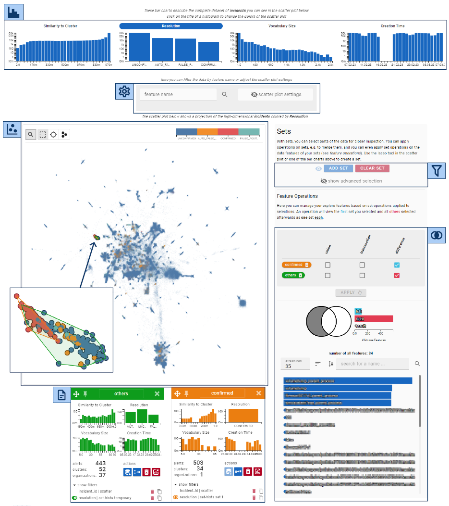

AlertSets: Supporting Exploratory Analysis of Cybersecurity Alerts through Sets

Venue. IVAPP (2025)
Abstract. Security providers typically deal with large numbers of alerts based on heterogeneous data from many endpoint sensors. While the number of alerts is generally much smaller than the volume of raw data, most alerts are false positives that do not reflect genuinely malicious activity. All types of experts work on such alerts, be it to determine whether they are indeed false positives, to build machine learning models to support their analysis or to keep an eye on the current threat landscape. We conducted a design study to support a diverse group of experts whose working environments are connected to the same alert data. Based on an ongoing industry project that clusters alerts, we designed and evaluated a visual analytics system which enables exploration via powerful, easy-to-understand filtering mechanisms framed through set operations. In this article, we describe our system, give a detailed breakdown of the design process and the lessons we learned. We discuss the results from expert interviews, which showed the set-based framing to align with experts’ intuitive approach to data analysis and helped users uncover improvement opportunities for the clustering and detection pipelines.
Link to this page: